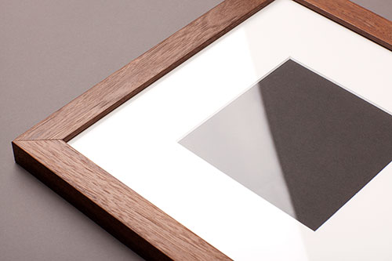
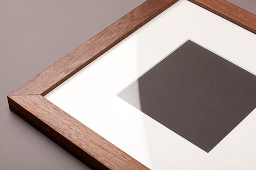
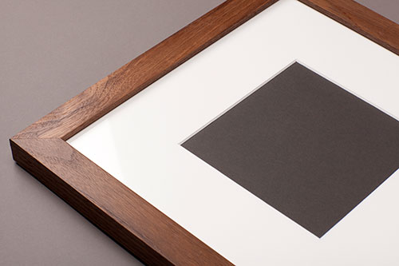

Glazing materials, typically glass or acrylic, protect framed art from dust and damage.
|
Standard An optically pure, framers grade acrylic. A fine choice for most photos, posters and prints provided you avoid hanging in direct sunlight. |
 | |
|
UV Protection Provides the highest level of protection against damaging Ultraviolet (UV) rays, preventing fading or yellowing of paper-based artwork. |
 | |
|
Non-Glare Has a subtle matte finish that cuts down on reflections from surrounding light and blocks out 99% of UV rays. Ideal for unhindered viewing of artwork. |
 |